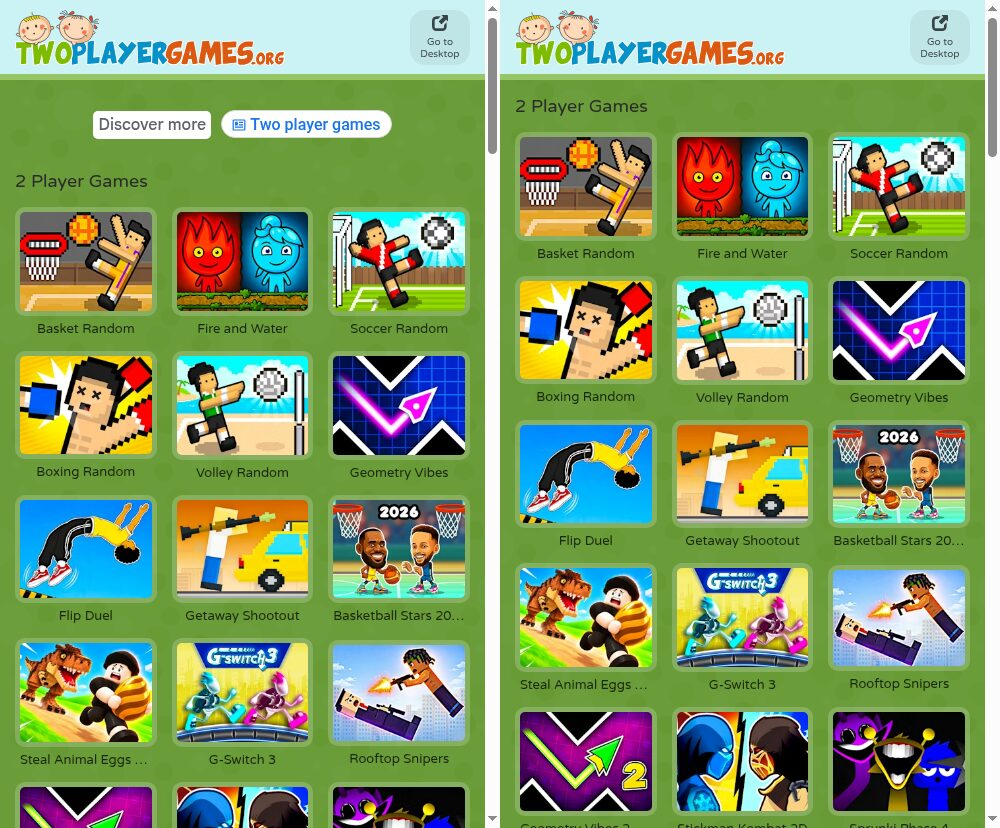

<meta data-alternate="https://freshmark.sunisalex.org/posts/technology/twoplayergames-ad-remover/" data-article="true" data-canonical="https://freshmark.sunisalex.org/en/posts/technology/twoplayergames-ad-remover/" data-description="A Manifest V3 extension for m.twoplayergames.org: it blocks the banner ads, skips the video ad before each game, and answers in-game ad requests so games never wait for an ad." data-freshmark-page data-title="A Small Chrome Extension That Removes the Ads on TwoPlayerGames — Freshmark"><main><header class="container article-header"><a href="/en/" class="back-link">← Back to all writing</a><p class="eyebrow article-subject">Technology</p><h1>A Small Chrome Extension That Removes the Ads on TwoPlayerGames</h1><p class="article-dek">A Manifest V3 extension for <a href="http://m.twoplayergames.org">m.twoplayergames.org</a>: it blocks the banner ads, skips the video ad before each game, and answers in-game ad requests so games never wait for an ad.</p><div class="article-meta"><time datetime="2026-10-07">October 7, 2026</time><span>5 min read</span><span>Chrome Extension · Manifest V3 · JavaScript · Web Game</span><span class="view-count" data-article-view-count hidden>Article views <strong data-article-views></strong></span><a href="index.md" download>Download Markdown</a><button type="button" class="article-share" data-share-article data-share-text="A Manifest V3 extension for m.twoplayergames.org: it blocks the banner ads, skips the video ad before each game, and answers in-game ad requests so games never wait for an ad." data-share-title="A Small Chrome Extension That Removes the Ads on TwoPlayerGames"><span data-share-label>Share article</span></button><output aria-live="polite" class="visually-hidden" data-share-status role="status"></output></div></header><div class="article-wrap"><aside class="toc"><div class="toc-head"><p>On this page</p><button type="button" class="toc-toggle" aria-expanded="false" aria-label="Toggle table of contents" data-toc-toggle><span class="toc-toggle-label">Table of contents</span><span class="toc-toggle-icon" aria-hidden="true"></span></button></div><nav aria-label="Table of contents" class="toc-links" data-toc-links><a href="#installation" class="toc-level-2">Installation</a><a href="#what-it-removes" class="toc-level-2">What it removes</a><a href="#how-it-works" class="toc-level-2">How it works</a><a href="#testing" class="toc-level-2">Testing</a><a href="#limitations" class="toc-level-2">Limitations</a></nav></aside><article class="prose"><figure class="prose-figure"><picture class="responsive-picture"><source srcset="game-before-after.freshmark-af4802a7b377-480w.avif 480w, game-before-after.freshmark-af4802a7b377-960w.avif 960w, game-before-after.freshmark-af4802a7b377-1000w.avif 1000w" type="image/avif"><source srcset="game-before-after.freshmark-af4802a7b377-480w.webp 480w, game-before-after.freshmark-af4802a7b377-960w.webp 960w, game-before-after.freshmark-af4802a7b377-1000w.webp 1000w" type="image/webp"></picture><figcaption>Before / After</figcaption></figure><p><a href="https://m.twoplayergames.org/">TwoPlayerGames</a> has plenty of good two-player games, but it shows ads in three places: a banner above the game list, a video ad after you tap <strong>Play</strong> (the one in my test ran for more than 30 seconds), and ad breaks inside many of the games. <strong>TwoPlayerGames Ad Remover</strong> is a small Chrome extension that removes all three. It only runs on <a href="http://twoplayergames.org">twoplayergames.org</a> and adds nothing to other sites.</p><p><strong><a href="twoplayergames-ad-remover-1.0.0.zip">Download TwoPlayerGames Ad Remover 1.0.0 (.zip, 9 KB)</a></strong></p><p>SHA-256: <code>fe797edb53efc07d374668e4dedeaffd4059c593dff876376eb3c0b2ae428e3c</code></p><h2 id="installation">Installation</h2><p>The extension isn't on the Chrome Web Store, so you load it as an unpacked extension:</p><ol><li>Download the zip above and unzip it. You'll get a folder named <code>twoplayergames-ad-remover</code>.</li><li>Open <code>chrome://extensions</code> in Chrome.</li><li>Turn on <strong>Developer mode</strong> in the top-right corner.</li><li>Click <strong>Load unpacked</strong> and select the <code>twoplayergames-ad-remover</code> folder (the one that contains <code>manifest.json</code>).</li><li>Open <a href="https://m.twoplayergames.org/">m.twoplayergames.org</a> or reload it if it's already open.</li></ol><p>It works in Chrome 111 and newer and in other Chromium-based browsers such as Edge and Brave. Chrome for Android doesn't support extensions, so on a phone you need a browser that can load Chrome extensions. Don't delete the folder after installing: Chrome loads the extension from it every time it starts.</p><h2 id="what-it-removes">What it removes</h2><table><thead><tr><th>Where</th><th>What the site does</th><th>What the extension does</th></tr></thead><tbody><tr><td>Home page and category pages</td><td>AdSense banners and an ad unit that suggests searches</td><td>Blocks the requests and hides the empty slots so the game list moves up</td></tr><tr><td>Before each game</td><td>A Google IMA video ad after you tap <strong>Play</strong></td><td>Blocks the video ad SDK. The site then goes straight to the game</td></tr><tr><td>Inside games</td><td>Ad breaks through Google's H5 Games Ads API (<code>adBreak()</code>)</td><td>Blocks the ad script and replies to the game that no ad is available</td></tr></tbody></table><figure class="prose-figure"><picture class="responsive-picture"><source srcset="home-before-after.freshmark-4a0cb6e8b4d8-480w.avif 480w, home-before-after.freshmark-4a0cb6e8b4d8-960w.avif 960w, home-before-after.freshmark-4a0cb6e8b4d8-1000w.avif 1000w" type="image/avif"><source srcset="home-before-after.freshmark-4a0cb6e8b4d8-480w.webp 480w, home-before-after.freshmark-4a0cb6e8b4d8-960w.webp 960w, home-before-after.freshmark-4a0cb6e8b4d8-1000w.webp 1000w" type="image/webp"></picture><figcaption>Home page · Before / After</figcaption></figure><h2 id="how-it-works">How it works</h2><p>The extension has four files plus icons and requests one permission, <code>declarativeNetRequest</code>. Its scripts run only on <a href="http://m.twoplayergames.org">m.twoplayergames.org</a> and <a href="http://files.twoplayergames.org">files.twoplayergames.org</a>, which is why Chrome says it can read and change data on those two sites. It sends no data anywhere.</p><p><strong><code>rules.json</code>: blocking the ad servers.</strong> One declarative network rule blocks requests to Google's ad domains (<code>googlesyndication.com</code>, <code>doubleclick.net</code>, <code>imasdk.googleapis.com</code> and a few others). The rule has the condition <code>initiatorDomains: [&quot;twoplayergames.org&quot;]</code>, so it only applies to requests made by pages and game frames on <a href="http://twoplayergames.org">twoplayergames.org</a> and its subdomains. Ads on other sites are not affected. Chrome applies the rule itself, so the extension has no background script.</p><p><strong><code>hide.css</code>: collapsing the empty slots.</strong> With the ad script blocked, the banner container would still take up space at the top of the page. The stylesheet hides <code>.main-ads</code>, <code>ins.adsbygoogle</code> and the video ad overlay <code>#ima-container</code>.</p><p><strong>The video ad before the game needs no special handling.</strong> I read the site's own script before writing anything. When it can't find Google IMA (<code>google.ima</code>), it logs &quot;No Google IMA, maybe an ad-blocker? 🤔&quot;, hides the ad container and enables the <strong>Play</strong> button. Tapping <strong>Play</strong> then fails to start an ad and goes straight to the game. So blocking <code>ima3.js</code> is enough.</p><p><strong><code>ad-shim.js</code>: keeping games from waiting for ads.</strong> Games hosted on <code>files.twoplayergames.org</code> use Google's H5 Games Ads API. They call <code>adConfig()</code> and <code>adBreak()</code>, and some wait for the callbacks <code>onReady</code> or <code>adBreakDone</code> before they start or resume. If the ad script is simply blocked, those callbacks never run. The shim runs in the page's own JavaScript context (<code>&quot;world&quot;: &quot;MAIN&quot;</code>) before any page script and provides a replacement <code>window.adsbygoogle</code> object:</p><ul><li><code>adConfig({ onReady })</code> calls <code>onReady</code> right away.</li><li><code>adBreak({ type, adBreakDone })</code> never calls <code>beforeAd</code>. It only calls <code>adBreakDone</code> with the status <code>noAdPreloaded</code>, the same status the real SDK reports when it has no ad ready.</li><li>Rewarded ads (<code>type: &quot;reward&quot;</code>) report <code>notReady</code>. You don't get the reward, but the game keeps running.</li></ul><p>The pages write <code>adsbygoogle = window.adsbygoogle || []</code>, and some might assign a new array directly. To handle that, <code>window.adsbygoogle</code> is defined with a getter and setter: assigning an array doesn't replace the shim, and any requests already in the array are handled.</p><h2 id="testing">Testing</h2><p>I loaded the extension into headless Chromium and visited the home page, Basket Random and Flip Duel with a phone user agent, once with the extension and once without:</p><ul><li><strong>Without the extension:</strong> the home page loaded scripts from <code>pagead2.googlesyndication.com</code>, <code>googleads.g.doubleclick.net</code> and others, and showed a 60-pixel ad unit. In Basket Random, 15 seconds after tapping <strong>Play</strong>, the screen still showed a video ad with 18 seconds left.</li><li><strong>With the extension:</strong> every request to an ad domain failed with <code>net::ERR_BLOCKED_BY_CLIENT</code>. On the game pages, the site's own log showed &quot;No Google IMA&quot; → &quot;Show the content 👾&quot;, and the game's start screen appeared right away. Flip Duel, a Unity game, logged &quot;AdConfig Ready&quot; from the shim and loaded normally.</li></ul><h2 id="limitations">Limitations</h2><ul><li>Some games (for example Fire and Water and Basketball Stars) are embedded from GameDistribution (<code>html5.gamedistribution.com</code>). The extension still skips the site's video ad on those pages, but the GameDistribution frame has its own ad system, and the extension leaves it alone. GameDistribution's games run on many other sites too, and blocking their ads could leave some of those games stuck.</li><li>The extension is tied to the site's current markup and ad setup. If TwoPlayerGames changes how it shows ads, the selectors in <code>hide.css</code> or the domain list in <code>rules.json</code> may need updating.</li><li>The stylesheet and the shim only run on <code>m.twoplayergames.org</code> and the game frames on <code>files.twoplayergames.org</code>. I haven't tested the desktop site, <code>www.twoplayergames.org</code>.</li></ul></article></div><section class="container comments" data-comments data-comments-path="/en/posts/technology/twoplayergames-ad-remover/"><div class="comments-head"><div><p class="eyebrow">Comments</p><h2 data-comments-title>Comments</h2></div><p>Sign in to join the discussion. Email is verified only when you register.</p></div><div class="comment-list" aria-live="polite" data-comment-list><p class="comment-state" data-comment-state>Loading comments…</p></div><button type="button" class="comment-more" data-comments-more hidden>Load older comments</button><div class="comment-auth" data-comment-auth><p class="comment-auth-status" data-auth-loading>Checking your session…</p><div hidden data-auth-guest><form class="comment-auth-form" data-auth-login><h3>Sign in to comment</h3><label>Email<input autocomplete="email" name="email" maxlength="254" required type="email"></label><label>Password<input autocomplete="current-password" name="password" maxlength="128" required type="password"></label><div class="comment-form-foot"><p class="comment-form-status" role="status" data-auth-login-status></p><button type="submit">Sign in</button></div></form><details class="comment-register"><summary>Need an account? Register</summary><form class="comment-auth-form" data-auth-register><label>Name<input autocomplete="name" name="name" maxlength="40" required></label><label>Email<input autocomplete="email" name="email" maxlength="254" required type="email"></label><label>Password<input autocomplete="new-password" name="password" maxlength="128" required type="password" minlength="8"></label><p class="comment-auth-hint">Use at least 8 characters.</p><div class="comment-form-foot"><p class="comment-form-status" role="status" data-auth-register-status></p><button type="submit">Register</button></div></form></details></div><form class="comment-auth-form" hidden data-auth-verify><p>We sent a code to your email. Complete registration within 10 minutes.</p><label>Six-digit code<input autocomplete="one-time-code" name="code" maxlength="6" required minlength="6" inputmode="numeric" pattern="[0-9]{6}"></label><div class="comment-form-foot"><p class="comment-form-status" role="status" data-auth-verify-status></p><button type="submit">Complete registration</button></div></form><div class="comment-auth-user" data-auth-user hidden><p>Signed in as <strong data-auth-user-name></strong> <span data-auth-user-email></span></p><button type="button" data-auth-logout>Sign out</button></div></div><form class="comment-form" hidden data-comment-form><label>Comment<textarea maxlength="2000" minlength="2" name="body" placeholder="Share your thoughts…" required rows="5"></textarea></label><p class="comment-markdown-hint">Markdown supported: emphasis, links, quotes, lists, and code.</p><label aria-hidden="true" class="comment-honeypot">Website<input autocomplete="off" name="website" tabindex="-1"></label><div class="comment-form-foot"><p class="comment-form-status" role="status" data-comment-form-status></p><button type="submit" data-comment-submit>Post comment</button></div></form></section></main>